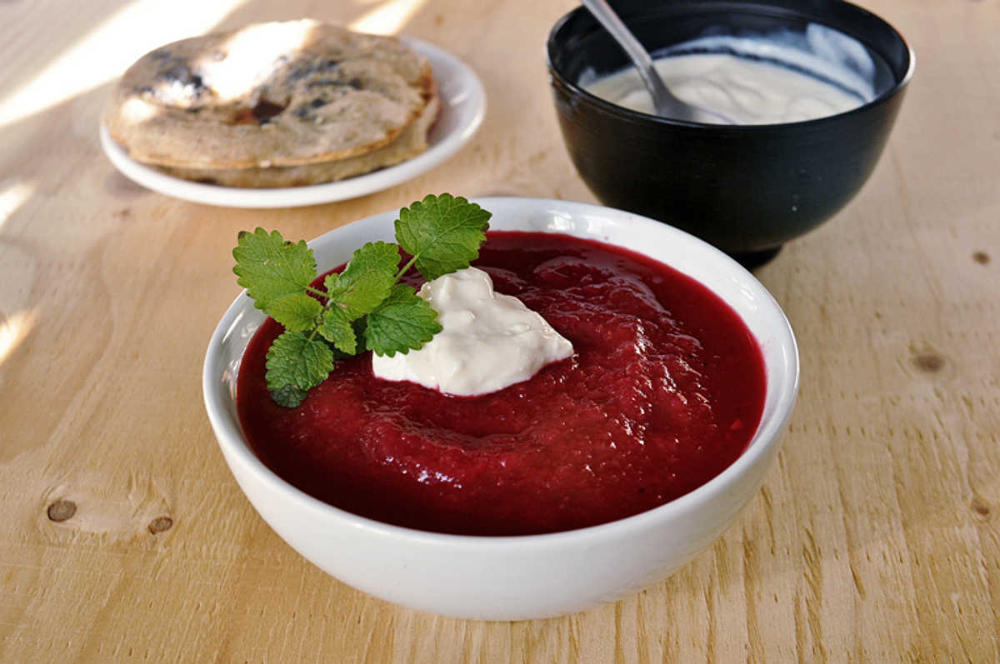

borscht with tofu sour cream
4 quarts — 60 minutes
Devine has been taking russian classes every week, and he comes back from his lessons with new words to teach me. Last week, he not only returned with new words, he also brought back a Borscht recipe.
Borscht is traditionally served with sour cream. A lot of vegan sour cream recipes have cashews, because of my tree nut allergy, i had to opt for something different. soft tofu does the job well, the mix of that plus lemon and apple cider vinegar gives a perfect sour taste!
 soft tofu 1 pack
soft tofu 1 pack whole cane sugar 1 tsp
whole cane sugar 1 tsp apple cider vinegar 1 tbsp
apple cider vinegar 1 tbsp lemon juice 5 tsp
lemon juice 5 tsp
sour cream
- Drain the pack of soft tofu, press it lightly with a cloth or paper towels to remove some of the water.
- Put the tofu, 1 tsp of whole cane sugar, 1 tbsp of apple cider vinegar and 5 tsp of lemon juice in a bowl. Blend until smooth.
- Put in the refrigerator for 1 hour to give it time to thicken.
 vegetable bouillon 4 cups
vegetable bouillon 4 cups red beets 2
red beets 2 sweet potatoes 1
sweet potatoes 1 carrots 2
carrots 2 red onion 1/2
red onion 1/2 garlic 3
garlic 3 tomato paste 2 tbsp
tomato paste 2 tbsp red cabbage 2 1/2 cups
red cabbage 2 1/2 cups bay leaf 1
bay leaf 1 sea salt pinch
sea salt pinch black pepper pinch
black pepper pinch- lemon juice 2 tsp
borscht
- Bring 4 cups of vegetable bouillon to a boil, add 2 peeled medium-sized red beets. Boil until softened.
- Peel and slice 1 medium-sized sweet potato. Add to pot and let boil for 15 minutes.
- While the potatoes are cooking, peel and julienne 2 carrots, cut 1/2 a red onion and mince 3 cloves of garlic. Add it all to a pan and fry until fragrant. Near the end add 2 tbsp of tomato paste, then toss in the pot.
- Cut 1/2 head of a small red cabbage into thin strips, add to pot.
- Put 1 bay leaf, season with salt and pepper and let it simmer for 10 minutes or until all the veggies are nice and soft.
- At the end, take pot off heat and stir in 2 tsp of lemon juice. You can serve as is if you like a chunkier soup, otherwise purée it with a handblender. Serve hot with tofu sour cream! For thicker and tastier Borscht, cook the soup the day before you plan to eat it. Let it cool and refrigerate it. It tastes better the next day, just re-heat it. Trust me, it'll be delicious.